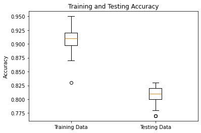

Computer Vision: Classification Problem
I decided to give the classic machine-learning problem of hand-written digit recognition a whirl, but in a effort to really understand the underlying principles and theory, I decided to start with no ML libraries, instead opting to use only Pandas and NumPy. I created a perceptron-based ANN and explored the effect of varying the number of layers, size of layers, learning rate, amount of training data, number of iterations, and activation function.
To start, I ran the ANN 100 times with random starting weights and biases, each trial using one hidden layer of size 10, training on a random 1000-size subset of the training data, 500 iterations of gradient descent, 0.1 learning rate, and ReLU as an activation function. As seen on the right, the average prediction accuracies on the training and testing data are 91% and 81% respectively.
I then ran another series of trials varying the number of iterations of gradient descent, as well as the size of the training data subset. We find, pretty much as expected, that more iterations and larger size training set result in higher testing accuracy. Two things I find interesting to note, however, are (1) the two are closely linked, and if one is below a certain threshold, the impact of the other is highly diminished, and (2) for this ANN, a training sample size of 2000-3000 appears to be a soft limit in that we see no significant increase in accuracy past this point - even up to 40 000.
After seeing the effect of varying the amount of training data and number of epochs, I was interested in the difference learning rate made. Using a baseline of 2500 training samples and 1000 generations, being small enough to reduce computation time but remaining accurate, I ran the ANN with learning rates from 0.1 to 0.9. As seen by the first graph, there was no noticeable difference. Thinking I might've already been past a "tipping point", as seen in the other hyperparameters, I reran the test varying the learning rate instead between 0.01 and 0.1, as shown in the graph on the right. This seems to confirm there is indeed a "tipping point" around 0.04. I also tested 0.9 to 0.99 in a similar fashion but found similar output to the first test.
However, since smaller learning rates require more generations, (Brownlee 2020), I decided to run it again keeping a constant learning rate of 0.01 and varying the generations from 1000 to 40000 (each one ten times). As expected, a lower learning rate still produces a fairly accurate neural network, just with more generations of descent being required. I do find it interesting to note, however, that the apparent maximum accuracy is the same as when the learning rate is higher and generations fewer. I can't speak in general, obviously, but in this specific case it seems lowering the learning rate and increasing training generations does not find more optimal solutions.
Next was to look at the effect of adding more hidden layers. The results for two hidden layers shows only marginally better performance than one. Surprisingly though, the results for three hidden layers shows noticeably worse performance than either one or two. My intuition is that more hidden layers would produce better performance, so I hypothesize that other variables keep the performance low. It may be the case that more hidden layers requires significantly more generations, for example.

Since previous trials seem to show similar performance with training data samples of 2500 and 40000, I went with 2500, a learning rate of 0.1, and then varied the generations from 1000 to 75000. Evidently, My hypothesis was wrong, at least in the case of this neural network. There could be many reasons for the low accuracy, from misintegrating the third layer to needing to dial in other hyperparameters. Since I only did one run of each generation count, the results could be due to small sample size, but computation time was getting long. I'll return to this experiment to get a larger sample.